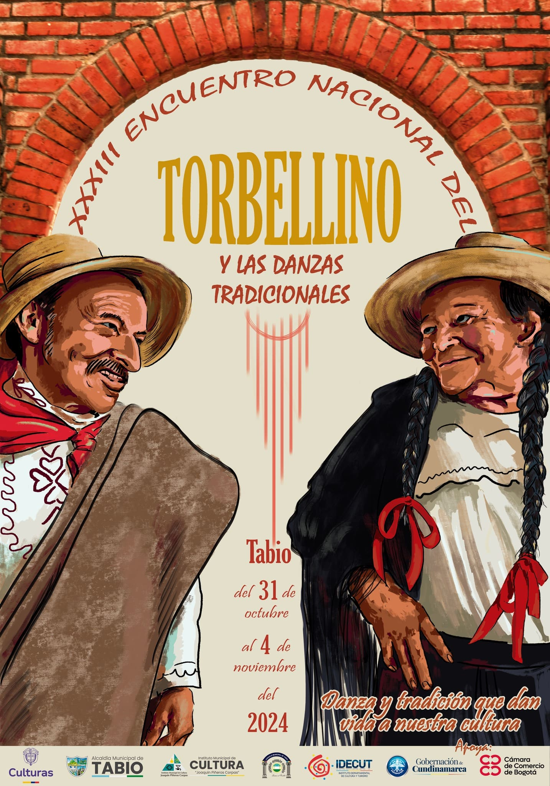
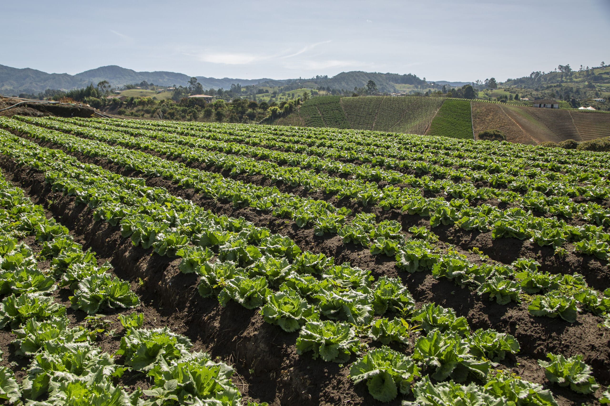
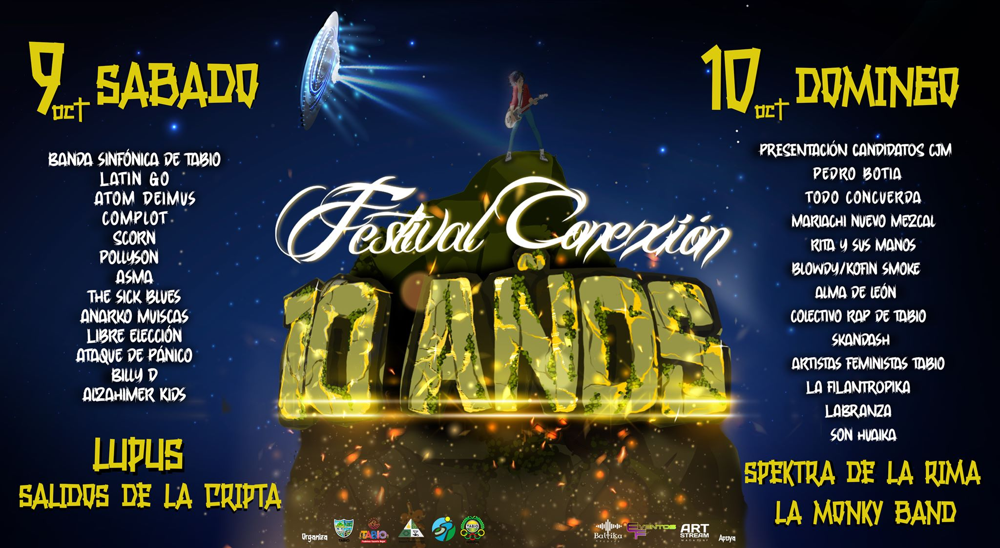

Festival del Torbellino

Es el evento más reconocido de Tabio y uno de los más importantes de la región. Se celebra anualmente a principios de noviembre y rinde homenaje al torbellino, una danza tradicional del altiplano cundiboyacense. Durante estos días, las calles se llenan de música, color y alegría, con presentaciones de grupos folclóricos, concursos de danza y actividades culturales.
Festival de la Tierra y el Trabajo

Celebra las tradiciones campesinas y la importancia de la agricultura en la región. Este evento celebra las raíces y el esfuerzo de las manos de quienes labran la tierra . disfruta de música en vivo, talleres, artesanía local junto a una oferta gastronómica que te conectará con lo más auténtico del municipio.
Festival Conexión

Compartimos la imagen oficial del Festival Conexión, XI edición, con la cual se hace un homenaje a nuestra riqueza natural, biodiversidad y belleza. La cabeza del jardín botánico es la protagonista de este cartel, pues es testigo y ha vibrado con todas las bandas que han hecho retumbar su notas para los tabiunos año a año. La Alcaldía Municipal invita a vivir una vez más esta experiencia, los días 8 y 9 de octubre en el Centro de Integración Ciudadana (CIC) municipal, desde las 12 m, con una tarima cargada de diversidad de géneros musicales, arte, emprendimientos y una fiesta de expresión e integración sin igual.